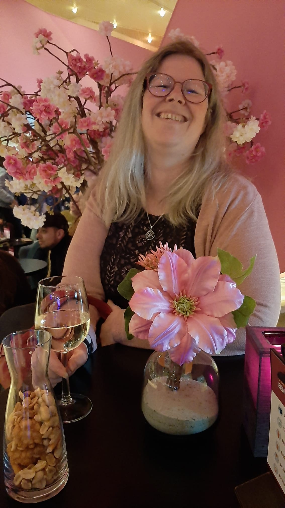

Natascha's best skills

Hoi, dit ben ik: Natascha en op deze webside laat ik een aantal van mijn vaardigheden zien.
Het lijkt wel een beetje raar, een webside die laat zien waar ik goed in ben. Maar er is een goede reden.
Tash heeft een hele leuke opdracht bedacht voor de toneel groep, waar ik elke dinsdag heenga.
Namelijk:
Laat zien waar je goed in bent en maak het zichtbaar!!!
Dus bij deze: mijn eigen gemaakte webside met mijn vaardigheden!
Ik hoop dat jullie het leuk vinden.